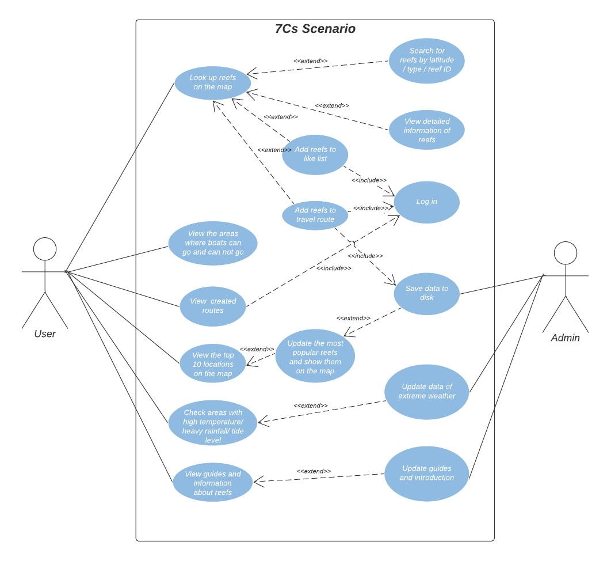

The goal of Part A was to do background research, explore datasets via data.gov.au and produce the design concept of the project. In Part A, we discussed several different ideas and finally decided to choose the coral reef concept based on the datasets we could find for the website. Then we divided the design concept document into sections, with each person responsible for some.
Part A
Design Concept Proposal and Pitch
Overview
Design exploration before Part A


In the first three weeks of contact sessions, we were guided by tutors to do design exploration. We started by brainstorming with the data on data.gov.au. We discussed in groups, wrote our ideas on the Miro board and iterated these ideas. After the activities, we started to do individual research for week 4’s pitch. When we discussed in the group, the discussion was guided by my classmates, and they picked the topic of education.
However, I thought it hard to find exciting datasets on education topics. And I was personally not interested in this topic. After researching datasets and similar websites, I decided to pick ‘bird’ as my topic since there are more than 800 kinds of birds in Australia, and there are so many datasets related to birds that I can use. I considered the target audience and made personas. I designed rich user interactions and drew a use case diagram to show it. Also, I sketch the homepage to represent my idea directly.
I felt a little nervous when doing the pitch, but I was satisfied with my pitch. My tutors and peers liked my idea. However, I did not do very well designing the poster since it was the first time for me to create a poster. I wanted to contain everything in my poster, and it caused too many texts on my poster. I could do better next time.
The design exploration before Part A was beneficial. We combined every team members’ idea in Part A. The dataset we used for the primary function was from one of our team members' research in design exploration. And the final product was similar to my sketch for the bird topic. Also, what we did in the design exploration made us very clear about what we should do when working on the group project.
My contribution
1. Researched different ideas
The project began with group brainstorming. My original idea was making an interactive map for bird lovers. Users could see locations of birds on the map with a brief introduction and photos. I created sketches and a poster for this idea. The low fidelity prototype in part A was based on the sketches I made for my original idea.
In the group meeting, we discussed every team members’ idea and tried to combine them. Because of the limitation of datasets, in the beginning, we decided to choose fishing combined with extreme weather as there were many datasets about fish on data.gov.au. We did much research on this topic. But we found these datasets could not be used to create an interactive map. So, we decided to change the topic to coral reefs because one of our team members found very suitable datasets.
2. Designed logo of the website
After we decided what to do, we started to guess the name and logo of the website. The name of our website is 7Cs, which means seven seas. So, I designed the logo based on the name.
The first version of the logo included a ship with “7Cs”. I drew a pair of eyes on the logo to show another meaning of 7Cs: seven sees. The colour of the logo kept consistent with the low fidelity prototype I designed.
We changed the colour theme many times, and every time we changed the colour theme, I kept changing the logo to make it consistent with the whole website.
3. Created low fidelity prototype and clarified user interactions

After we discussed the purpose of our website, we decided to include these main functions on the website: 1. searching reefs in the search bar; 2. showing areas with extreme weather on the map; 3. showing top 10 popular reefs on the map; 4. adding reefs to travel routes and show planned ways on the map;
After we finished the discussion, I started to create the low-fidelity prototype, which shows how the website responds to user interaction. I also clarified all the user interactions in the design report. I used the same colour theme and layout with the sketches of my original idea. I did not know that we could change the map colour at this stage, so I did not consider the colour theme much. We discussed and tested a lot of different colour themes in Part C.
4. Drew use case diagram

I have drawn a use case diagram for my poster, so I was very familiar with it. We discussed the target audience in a group meeting. There were two kinds of the target audience for our website: experts and regular users. The search function was explicitly designed for experts who have related knowledge about coral reefs since normal users would not know the unique ID, name or type of the reef. The regular users might be interested in coral reefs and tried to see coral reefs on their own without travel agencies. I created the use case diagram based on the target audience.
5. Scope of the website and layout of personas
To make the style of the design report consistent. I made the template of personas that had the same colour theme with the low fidelity prototype. I also wrote the draft of the website's scope to clarify what our website would do and why.
6. Made slides of user interactions part
After we finished the report, we started to prepare for the pitch. I summarized the essential points and made slides of user interactions. I tried to make the slides concise and clear. And I also used the same colour theme to make the slides consistent with the prototype of our website.
Reflection
I think Part A was successful. We decided on the straightforward design concept of the website after researching and discussing several different ideas. Then we divided the design concept document into several sections. Everyone chose the part that they were good at. We did our own parts in the library together. We brought up any issues right away and discussed them together. All team members staying in the library to do part A together made the teamwork incredibly efficient. After we finished the concept document, we divided the pitch into several parts and practiced the presentation together in the same way. We pitched our concept in class confidently. Part A gave a clear direction for Part B and Part C. The final product is very similar to the low fidelity prototype in Part A.
I would do more research on datasets and leave more time for Part A if it arose again. In the beginning, we discussed every team member’s idea and decided to choose fishing as our topic. However, we could not find suitable datasets (distribution locations and photos of different kinds of fish) and finally changed the topic to coral reefs. This wasted too much time. According to tutors and peers' feedback, some of them thought our website was not attractive enough. If we had more time in Part A, we could have designed more exciting interactions to make our website more attractive.